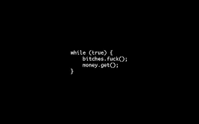

I wanted to share some thoughts on the topic of hackers. Hackers are individuals who use their technical expertise to gain unauthorized access to systems and data. While the term often carries a negative connotation, it's important to recognize that not all hackers have malicious intent.
There are different types of hackers, including white-hat, black-hat, and gray-hat hackers. White-hat hackers use their skills for ethical purposes, helping organizations improve their security by identifying vulnerabilities..
I wanted to share some thoughts on the topic of coding. Coding, also known as programming, is the process of writing instructions for computers to perform specific tasks. These instructions, or code, are written in various programming languages such as Python, Java, C++, and JavaScript, each with its unique syntax and applications.
Coding is a fundamental skill in today's digital world. It powers everything from simple websites to complex software systems and is essential in fields like web development, data science, artificial intelligence, and more. Learning to code can open up numerous career opportunities and is a valuable skill for solving problems and automating tasks.
One of the great aspects of coding is its accessibility. There are many resources available online, including tutorials, courses, and coding communities, making it possible for anyone to start learning regardless of their background. Additionally, coding fosters logical thinking, creativity, and attention to detail, which are beneficial skills in many areas of life.
the codding life
I wanted to share some thoughts on the life of a coder. Coding, or programming, is not just a profession but a lifestyle for many. It involves creating and maintaining software, solving complex problems, and continuously learning new technologies.
The life of a coder is often characterized by creativity and innovation. Coders build applications, websites, and systems that can have a significant impact on various aspects of our daily lives. They work in diverse industries, from tech companies to healthcare, finance, entertainment, and beyond.
A typical day for a coder might involve writing and testing code, debugging issues, collaborating with team members, and learning new programming languages or frameworks. The field is ever-evolving, requiring coders to stay updated with the latest trends and technologies. This constant learning and adaptation can be both challenging and rewarding.
Coders often enjoy a flexible work environment, with many opportunities for remote work. This flexibility allows for a better work-life balance, although the nature of coding can sometimes lead to long hours, especially when meeting deadlines or troubleshooting critical issues.
One of the most fulfilling aspects of coding is the ability to create something from scratch and see it come to life. Whether it's a simple website or a complex software application, the sense of accomplishment and the impact on users can be incredibly rewarding.
# Function to calculate the factorial of a number
def factorial(n):
if n == 0:
return 1
else:
return n * factorial(n-1)
# Main part of the script
number = int(input("Enter a number: "))
result = factorial(number)
print(f"The factorial of {number} is {result}")
Let's break down the script:
Function Definition: The factorial function is defined to calculate the factorial of a given number n. The function calls itself recursively until n is 0, at which point it returns 1.
Input: The script prompts the user to enter a number using input() and converts it to an integer with int().
Function Call: The script calls the factorial function with the user's input and stores the result in the result variable.
Output: The script prints the result using an f-string to format the output.
Feel free to run this code in a Python environment to see how it works!
# Function to calculate the factorial of a number
def factorial(n):
if n == 0:
return 1
else:
return n * factorial(n-1)
# Main part of the script
number = int(input("Enter a number: "))
result = factorial(number)
print(f"The factorial of {number} is {result}")

I wanted to share some thoughts on the life of a developer. A developer, often referred to as a software developer or programmer, plays a crucial role in creating and maintaining software applications, websites, and systems that we use daily.
I wanted to share some thoughts on the life of a developer. A developer, often referred to as a software developer or programmer, plays a crucial role in creating and maintaining software applications, websites, and systems that we use daily.
I wanted to share some thoughts on the life of a developer. A developer, often referred to as a software developer or programmer, plays a crucial role in creating and maintaining software applications, websites, and systems that we use daily.
I wanted to share some thoughts on the life of a developer. A developer, often referred to as a software developer or programmer, plays a crucial role in creating and maintaining software applications, websites, and systems that we use daily.
I wanted to share some thoughts on the life of a developer. A developer, often referred to as a software developer or programmer, plays a crucial role in creating and maintaining software applications, websites, and systems that we use daily.
I wanted to share some thoughts on the life of a developer. A developer, often referred to as a software developer or programmer, plays a crucial role in creating and maintaining software applications, websites, and systems that we use daily.
I am Ashik Khan. I am a Web Developer based in Bangladesh, with a rich experience of over 2 years in Frontend Expert is An International Web Developer. I can easily provide responsive web site and develop your Business. I can provide you.. Word press website E-commerce website Portfolio website Figma to HTML Design I can responsive website development using /> HTML 🌟 /> CSS 🌟 /> JAVA SCRIPT 🌟/> BOOTSTRAP 🌟 /> REACT JS 🌟 I am working full time at time and contact le . As I am doing full time walk so if you like my work then you can hire me and help me with a good amount.
- NODE_JS
- MONGO_DB
- FAIR_BASE
@All RESERVER BY ASHIK KHAN